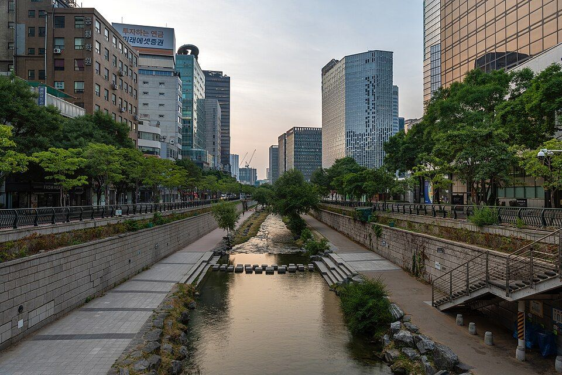
109:30
Выход и прогулка вдоль Cheonggyecheon
Ручей начинается в конце твоей улицы, у моста Supyo-gyo, и ведёт на запад прямо к площади Gwanghwamun. Утром прохладно, около 13°. Можно и такси, это около 5 минут.
Четверг, 1 октября · днём город, вечером KBW · пешком от отеля и обратно, 8 км, около 1 ч 50 мин чистой ходьбы
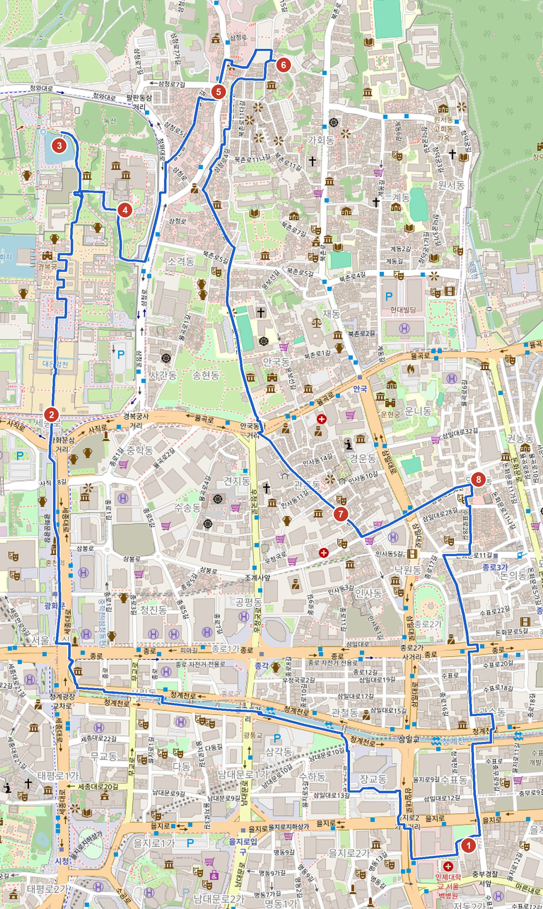

Ручей начинается в конце твоей улицы, у моста Supyo-gyo, и ведёт на запад прямо к площади Gwanghwamun. Утром прохладно, около 13°. Можно и такси, это около 5 минут.
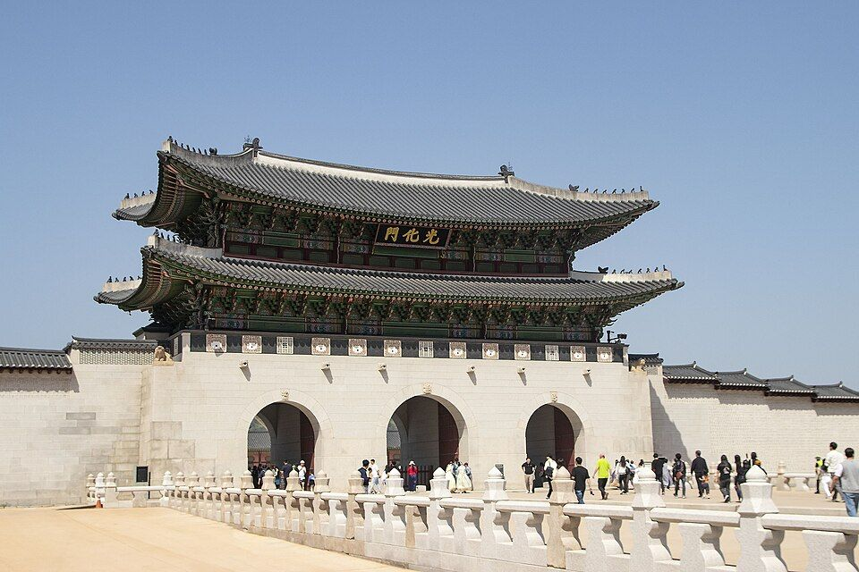
Главные ворота дворца Gyeongbokgung. Церемония смены королевской стражи идёт в 10:00 и в 14:00, около 20 минут, бесплатно. По вторникам её нет, сегодня четверг.
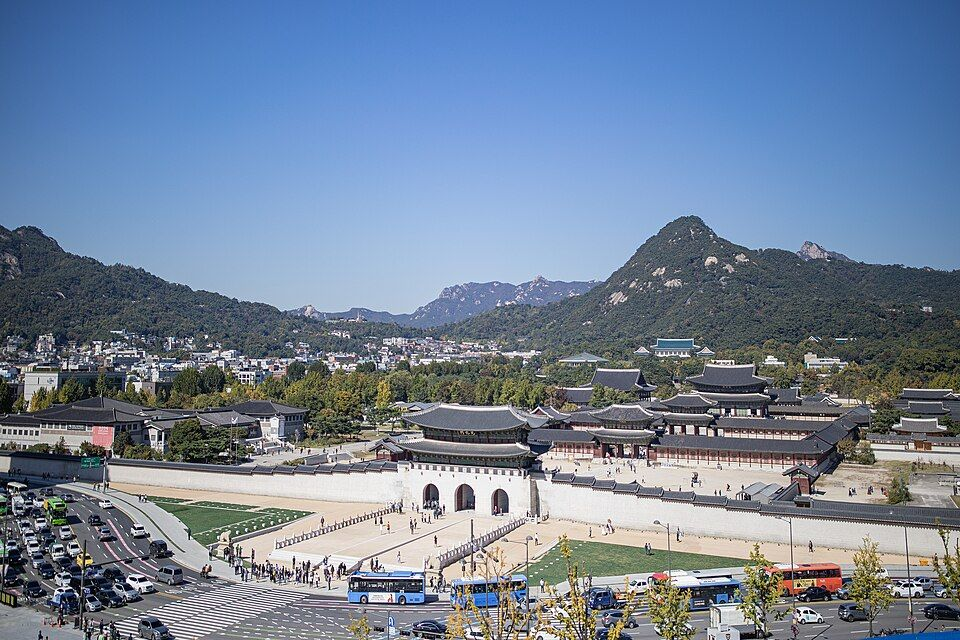
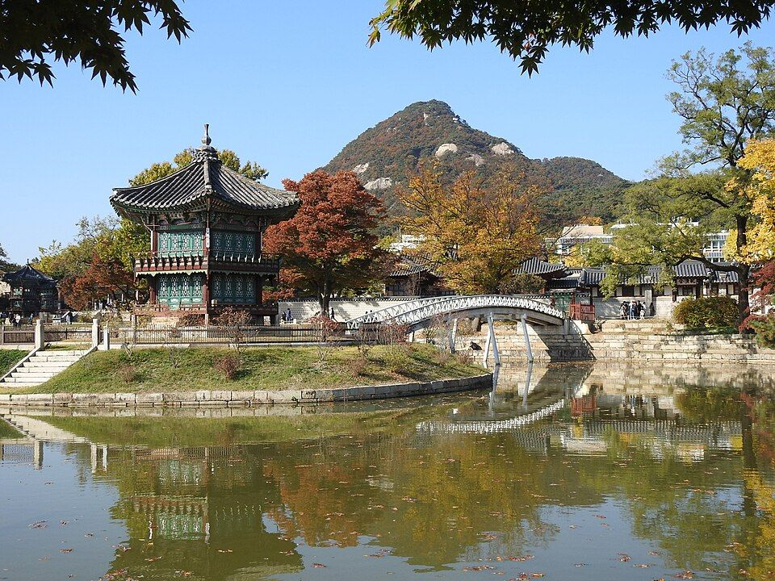
Главный и самый большой дворец династии Чосон, 1395 год. Во вторник, когда ты гулял, он был закрыт, сегодня работает.
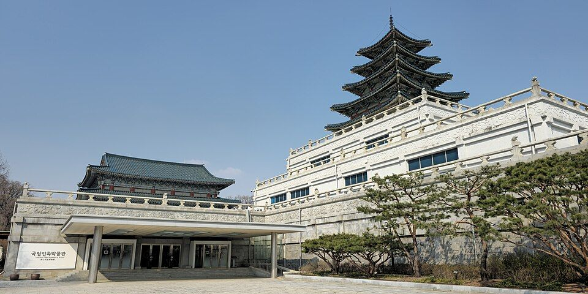
Стоит на территории дворца, у восточного выхода. Быт корейцев от древности до XX века, на улице есть воссозданная улица 1970-х. Работает 09:00-18:00. Цену билета не проверял.
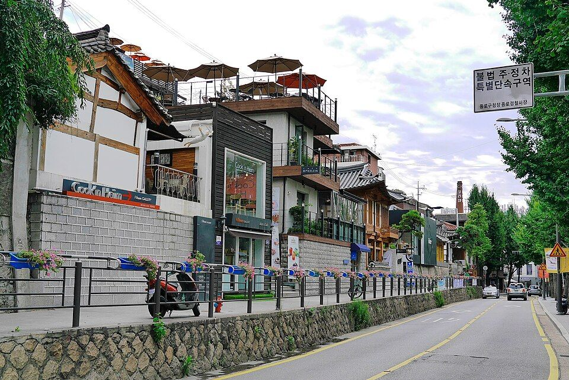
Улица за восточной стеной дворца: галереи, маленькие рестораны и кофейни в ханоках. Удобное место пообедать по дороге.
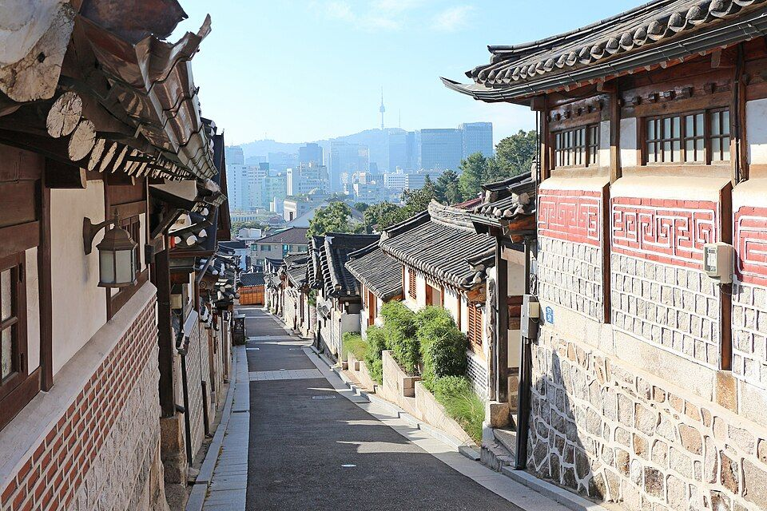
Квартал традиционных домов-ханоков на склоне, виды на крыши и город. В нём живут люди, поэтому туристам вход в «красную зону» (Bukchon-ro 11-gil) только с 10:00 до 17:00, после этого штраф 100 000 ₩. Говорить тихо.
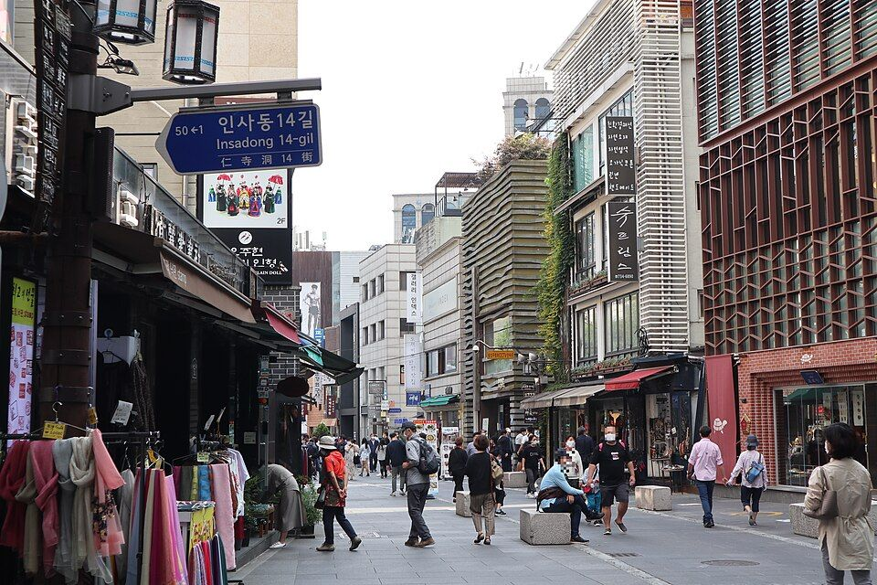
Улица антиквариата, керамики, чайных и традиционных сладостей. Внутри торговый двор Ssamziegil со спиральной галереей.
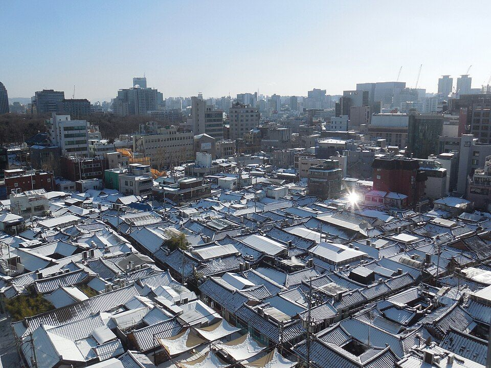
Самый старый квартал ханоков Сеула, переулки с кафе и маленькими ресторанами. Хорошо на кофе перед возвращением.
17:00 обратно в отель от Ikseon-dong: 1,3 км, 17 минут пешком.
18:45 такси на KBW VIP Mixer (Apgujeong, начало 19:30): 8,6 км, около 11 минут без пробок, в час пик дольше.
Если передумаешь про Bridging Finance (программа в 15:00): Four Seasons в 600 м от ворот Gwanghwamun, то есть прямо по пути. Тогда после дворца иди туда, а Bukchon и Insadong перенеси.
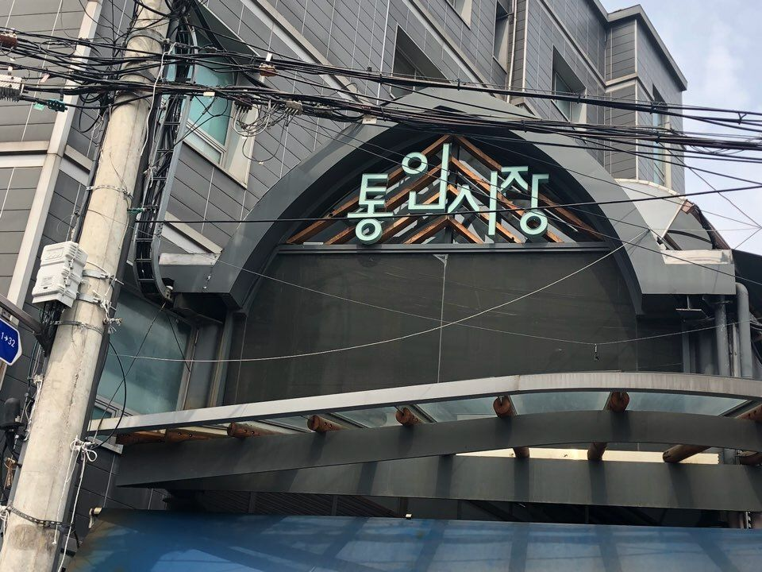
К западу от дворца. Покупаешь латунные монетки (5 000 ₩ набор) и собираешь обед-досирак из разных лавок. Кафе работает по четвергам 11:00-15:00.
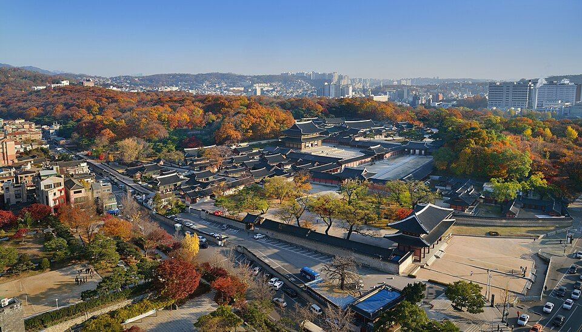
Если 29.09 до него не дошёл. Сад только с гидом, 70-90 минут. Дворец рядом с Insadong.
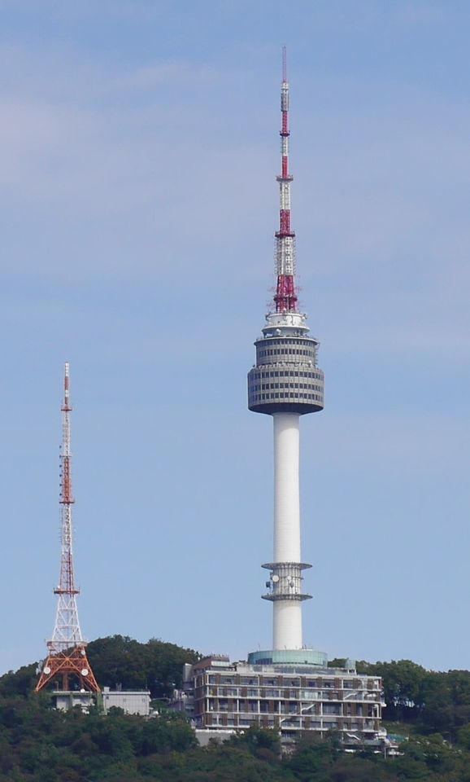
Вид на весь город, в ясный день лучший. Канатная дорога работает. Закат в 18:15, с вечерним Mixer в Apgujeong это впритык.
Одежда: утром и вечером нужна куртка или свитер, днём тепло.
Навигация: Google Maps в Корее показывает место и фото, но не строит маршрут. Для дороги жми Naver.
Фото: Wikimedia Commons. Часы работы и цены проверены по открытым источникам 01.10.2026.